たのしく学べる！ブラウザでつかえる！
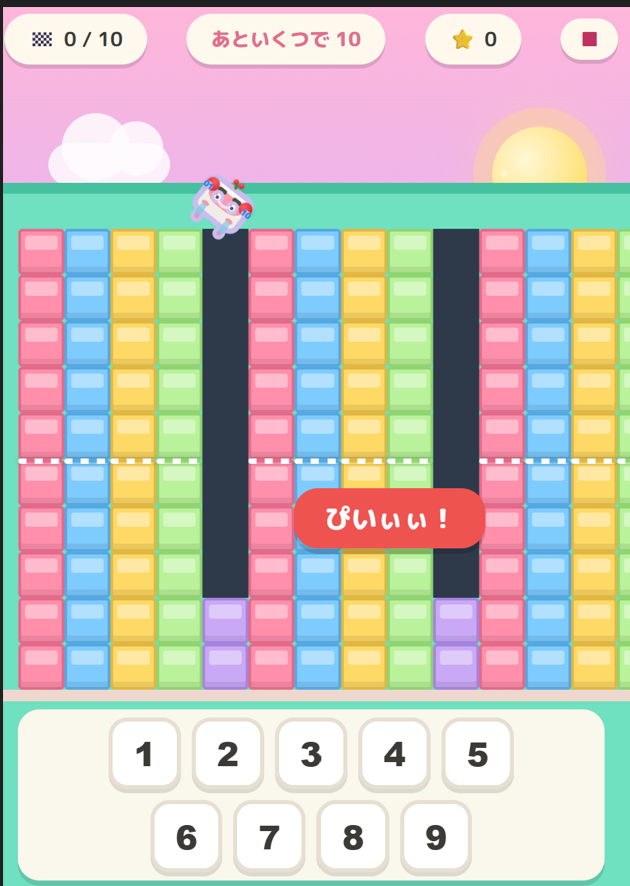
5はいくつといくつ？あといくつで10？を楽しく！
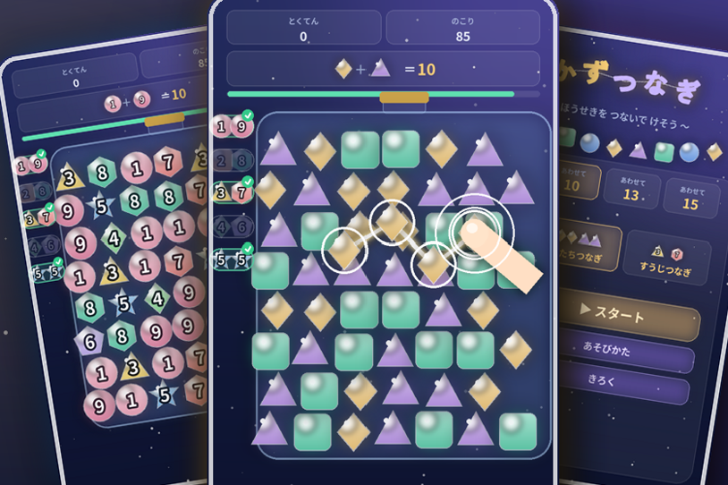
つないで けして 数パズル。いくつと いくつ、たしざんの 新タイプの 遊び！
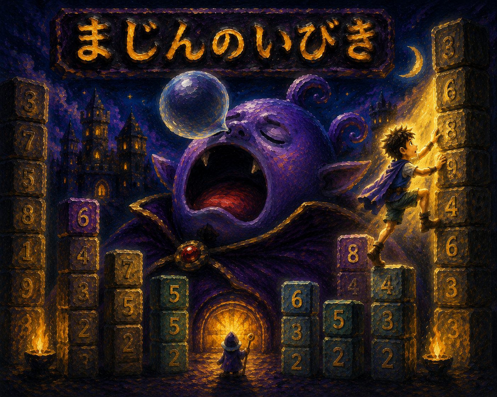
くずれる～！石をすばやく組み合わせて脱出だ！
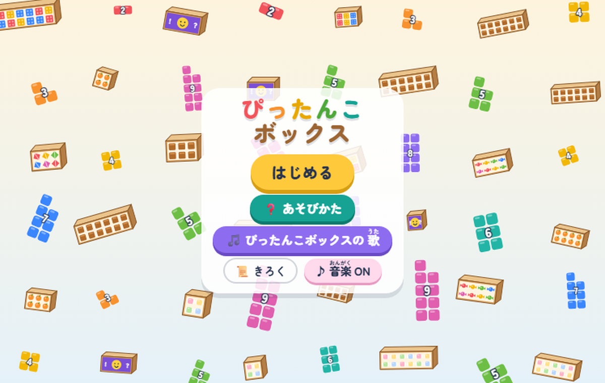
はこに ブロックを ぴったり いれたら きえるよ！（奇数・偶数とそのたし算の素地）
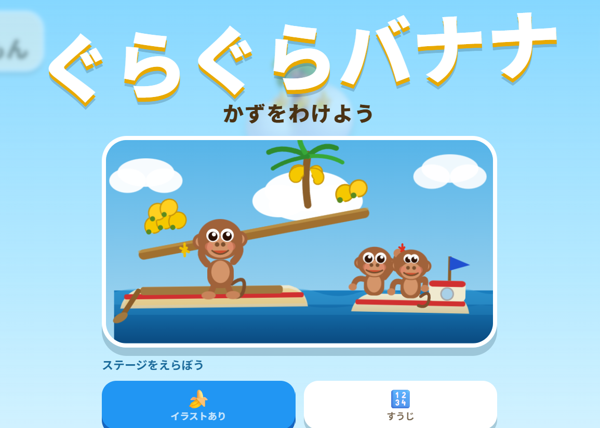
半分にわけて バランスとれるかな
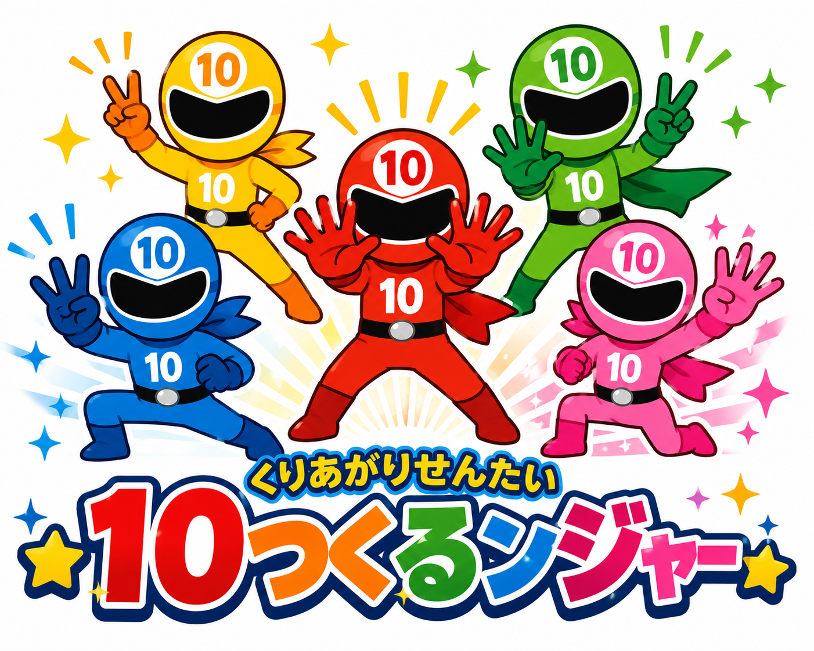
モンスターをやっつけよう！
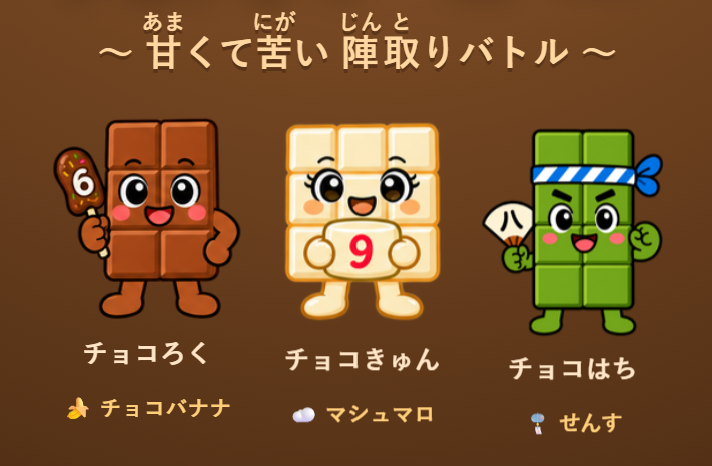
自信作できました。いたチョコをおく！あいてのチョコをとかす！
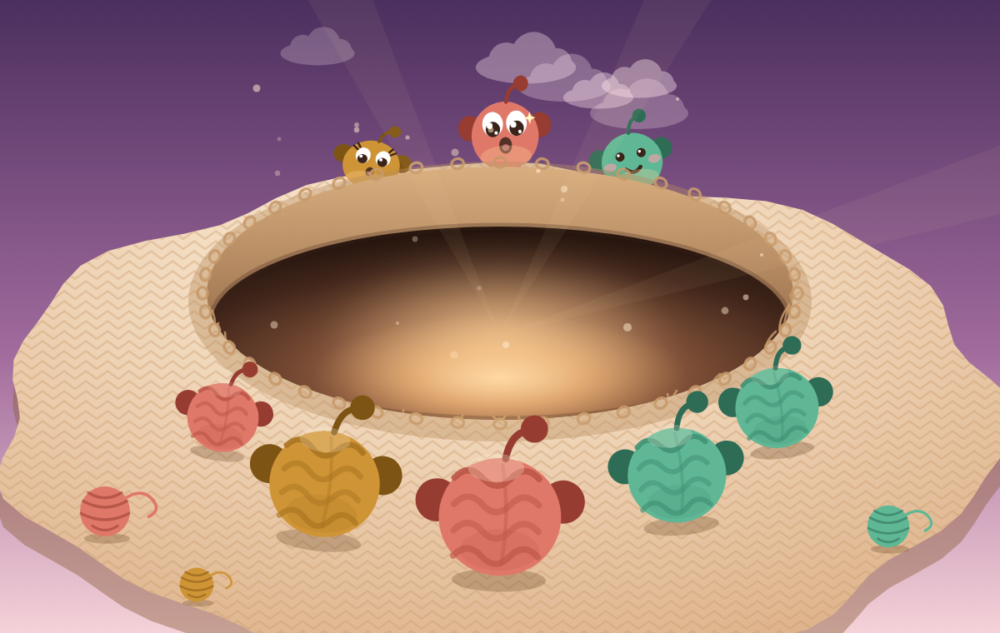
あなが あくぞー！みんなを 島へ にがして なかよく 分けよう
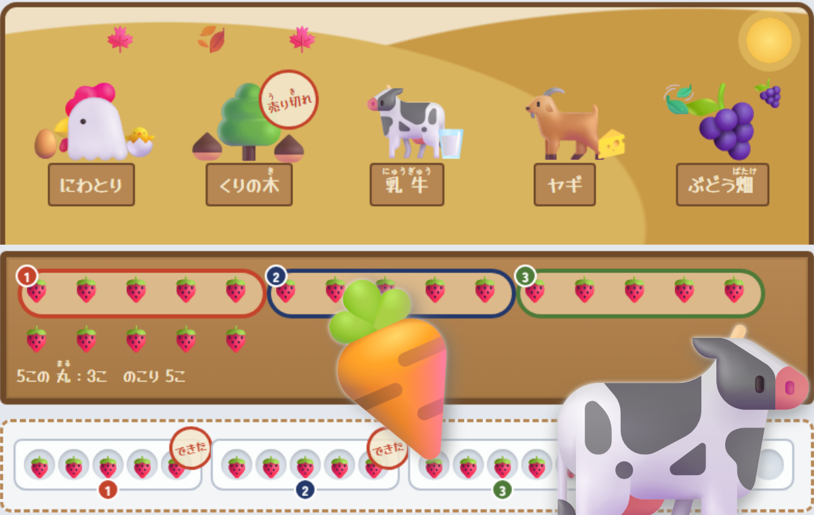
とれた やさいや たまごを 同じ数ずつ 丸で かこんで パックづめ。何パック できるかな
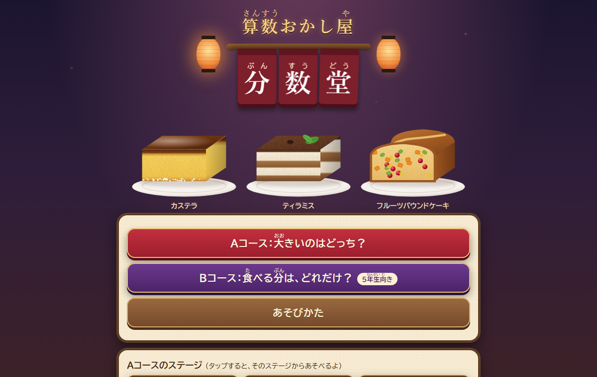
のれんを くぐって おかし屋へ！大きいのは どっち？ 正解したら ケーキを 食べられるよ
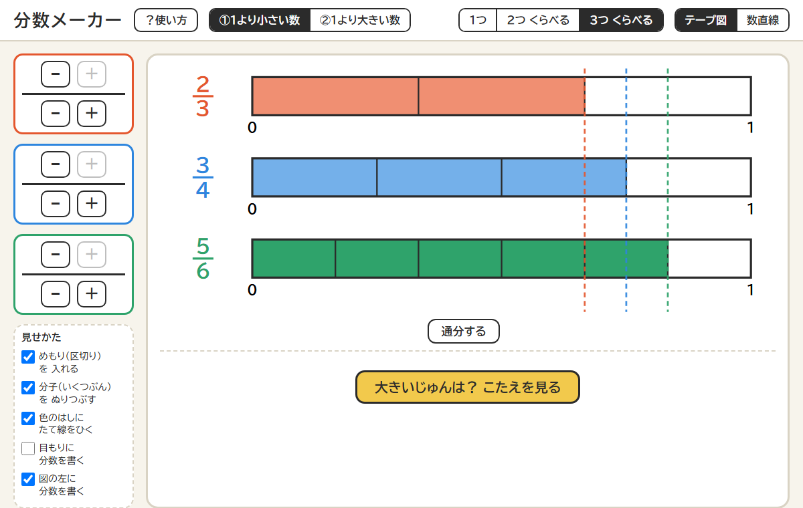
分数を テープ図や 数直線で ならべて くらべよう。通分も ボタン１つ
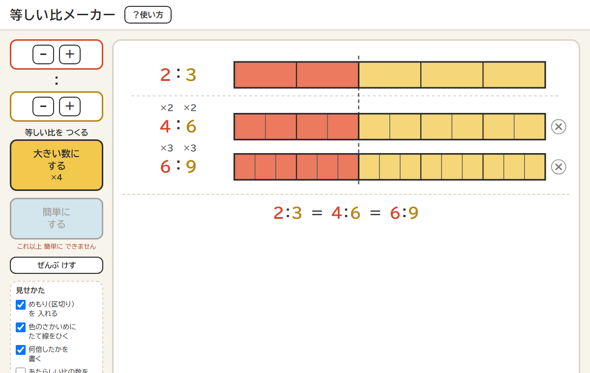
比を テープ図で あらわそう。大きい数にしても 簡単にしても 比は 同じ
パンや ピザを 同じ大きさに 切って 焼こう。ちゅうもん・よみとり・じぶんで切る